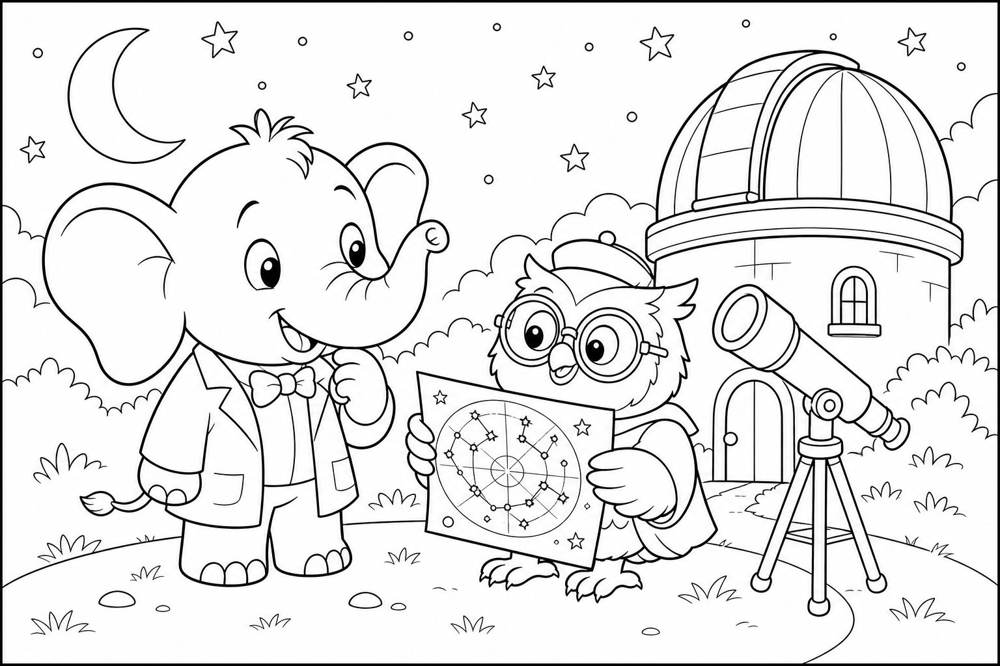

Cerca questa immagine in fondo al libro per colorarla come preferisci. Ricorda: i bottoni a forma di stella dorati e il filo blu della mantella.
C'era una volta un Elefante di nome Franco, che gli amici chiamavano ... EleFranco. Di cognome faceva Franchini. Abitava nella sua accogliente casa nel paesino di FrancaVilla, un borgo sartoriale dove le vetrine esponevano gomitoli colorati come confetti, i marciapiedi odoravano di stoffa nuova e sotto le case correvano piccoli tunnel che collegavano le botteghe degli artigiani come fili invisibili.
Era una mattina ventosa e EleFranco aveva un compito urgente: «La mantella del vento ha strappato un lembo! Devo andare dal merciaio a prendere un rotolo di filo blu prima che la sera diventi fredda.» Toccò il tessuto svolazzante alla finestra. «Senza riparazione, entra il freddo.»
Si infilò le sue scarpe giganti morbide color lana grigia, prese il pezzo di mantella strappato e scese verso la bottega. Il selciato tremava piano: THUMP THUMP THUMP Davanti all'ingresso arrotondato della merceria sotterranea, sentì un piccolo lamento. Tina la Talpa Sarta — con il grembiule a quadri e le unghie curate da sarta — sedeva accanto a una buca buia, con gli occhiali appoggiati sulla testa. «EleFranco, che disastro!» sospirò.
«I bottoni per l'abito della festa sono caduti nella buca del laboratorio. Sono tutti rovesciati, mescolati con spilli e sabbia fine. Io senza occhiali non vedo nulla laggiù, e l'abito deve essere pronto per domani!» EleFranco guardò la buca.
Poi guardò il pezzo di mantella. Poi di nuovo Tina. «Non ti preoccupare, Tina. Mettiamo ordine.»
Ma mentre si chinava, la mente cominciò a vagare: quanti punti avrebbe fatto sulla mantella? A punto croce o a maglia? E se il merciaio avesse anche un filo argentato? Stava quasi per affondare la zampa nella buca senza piano quando Tina gridò: «EleFranco, attento agli spilli!»
Allora l'elefante scosse le grandi orecchie e disse ad alta voce la sua parola magica: "FOCUS!"«Piano, Tina. Un mucchietto alla volta.» Provò a separare i bottoni con la punta della proboscide, ma la zampa gigante era troppo larga per la buca stretta. Decise di estrarre tutto in una volta — bottoni, spilli, gomitoli caduti — e sistemarli sul pavimento.
Fu un errore buffo: il mucchio divenne un turbine colorato. Bottoni rotolarono verso destra, spilli verso sinistra, gomitoli si srotolarono come serpenti di lana. «Ops,» disse EleFranco, con un bottone blu incastrato nell'orecchio. «Sembro un cuscino decorato.»
Tina non rise. «È peggio di prima!» EleFranco respirò piano. «Hai ragione.
Ordine nel caos: prima i grandi, poi i piccoli.» Con la proboscide, creò tre mucchietti: bottoni da un lato, spilli dall'altro, fili al centro. Tina, con gli occhiali finalmente sul naso, iniziò a riconoscere le forme. Proprio in quel momento, una piccola scossa di terra — dolce come un sospiro — fece tremare la buca.
Dalla sabbia emersero bottoni a forma di stella, dorati e lucenti, che nessuno aveva mai visto prima. «Eccoli!» esclamò Tina. «I bottoni speciali per il colletto!» Con il filo blu comprato in fretta al merciaio, EleFranco riparò la mantella.
Tina cucì le stelle sull'abito: era più bello di quanto avesse immaginato. La missione era compiuta: mantella a posto, abito splendente, bottega in ordine.
EleFranco capì allora la morale di quella giornata: Mettere ordine nel caos è già metà dell'aiuto. 🧺
EleFranco guardò i gomitoli colorati e scoppiò nella sua famosa risata: OH... OH... OH...